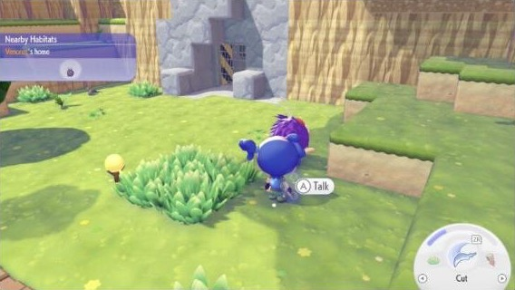

👋 가까이 갔을 때 안내 — 시안 4개 (A안 HUD 위에) + 포코피아 실제 화면
공통: 머리 위 말풍선은 지금처럼 이모지만(🔧·💬) · 액션 버튼은 가까이 간 대상의 아이콘으로 바뀌고 주황 테두리로 깜빡임 · 💬 대화하기 버튼은 따로 두지 않고 액션 버튼이 맡음
아래 3개는 "무슨 뜻인지" 글자로 알려 주는 자리만 다릅니다. 가로 = 주민 근처, 세로 = 작업대 근처.
REF포코피아 실제 화면 (Game8 공략 스크린샷)

- 대상 바로 옆에 동사 알약 "Ⓐ Talk" — 말 걸 수 있는 대상 하나에만, 가까이 있을 때만 뜹니다. 버튼 기호 + 한 단어.
- 왼쪽 위 지역 카드 "Nearby Habitats · ○○'s home" — 지금 근처에 무엇이 있는지 이름으로 알려 줍니다.
- 오른쪽 아래 도구 휠 — 가운데 지금 기술 아이콘 + 아래 이름("Cut")과 버튼(ZR), 양옆 화살표로 넘김.
- 대상이 서로 대화 중이면 알약 문구가 "Talk" → "What's this about?" 으로 바뀝니다(공략 본문).
P4포코피아식 — 대상 옆 동사 알약 + 지역 카드 + 휠 이름표
가장 가까운 대상 하나 옆에만 "🔘 이야기하기 / 열기" 알약을 띄웁니다(누르면 바로 실행). 처음 다가간 건물은 왼쪽 위에 이름 카드가 잠깐 나오고, 휠 가운데 아래엔 지금 도구 이름이 붙습니다.
근처보라 할머니네 집
💬
✋이야기하기
💬
🌰
💧
🌾
씨앗
가로 · 주민 근처
👍포코피아와 같은 문법. 설명이 대상 바로 옆이라 "저걸 누르면 되는구나"가 가장 확실하고, 휠을 가리지 않습니다.
👎"월드 말풍선은 이모지만" 규칙(10/12)의 예외가 됩니다 — 다만 그 규칙은 작물·방문객 머리 위 멘트를 막은 것이고, 이건 가까운 대상 1개에만 뜨는 동사 한 단어라 성격이 다릅니다.
P1액션 버튼 옆 말꼬리 라벨
액션 버튼 왼쪽에 "누르면 무엇을 하는지"를 짧게 붙입니다. 시선이 엄지 쪽에 머물러서 바로 누르게 됩니다.
👍가장 짧고 직관적. 버튼과 설명이 붙어 있어 "이걸 누르면 되는구나"가 바로 연결됩니다.
👎라벨이 휠 도구 자리와 겹쳐 가까이 있는 동안엔 도구를 흐리게 처리해야 합니다.
P2하단 중앙 알림 카드
화면 아래 가운데에 대상 이름 + 할 수 있는 일 카드를 띄웁니다. 카드 자체도 누를 수 있습니다(버튼과 같은 동작).
💬
💬
🌰
💧
🌾
🧶보라 할머니주민 · 의뢰가 있어요💬 이야기
가로 · 주민 근처
🔧
🔧
🌰
💧
🌾
🔧자재 작업대울타리·화분을 만들어요열기
세로 · 작업대 근처
👍설명을 한 줄 더 줄 수 있어 처음 보는 건물·주민도 뭔지 압니다. 휠을 가리지 않습니다.
👎세로 화면에선 카드가 화면 가운데로 올라가 캐릭터 시야를 조금 가립니다.
P3상단 안내 배너(처음 몇 번만)
위쪽 안내 자리에 한 줄 배너를 띄우고, 같은 대상은 3번 본 뒤부터는 배너 없이 액션 버튼 아이콘만 바뀝니다.
💬 보라 할머니 근처예요 오른쪽 아래 버튼
💬
💬
🌰
💧
🌾
가로 · 주민 근처
🔧 자재 작업대 버튼을 눌러 열어요
🔧
🔧
🌰
💧
🌾
세로 · 작업대 근처
👍익숙해지면 사라져서 화면이 가장 깨끗합니다. 기존 안내 자리(위쪽 슬롯)를 그대로 씁니다.
👎버튼과 설명이 멀어서(위 ↔ 오른쪽 아래) 연결이 약하고, 의뢰 안내와 자리를 다툽니다.